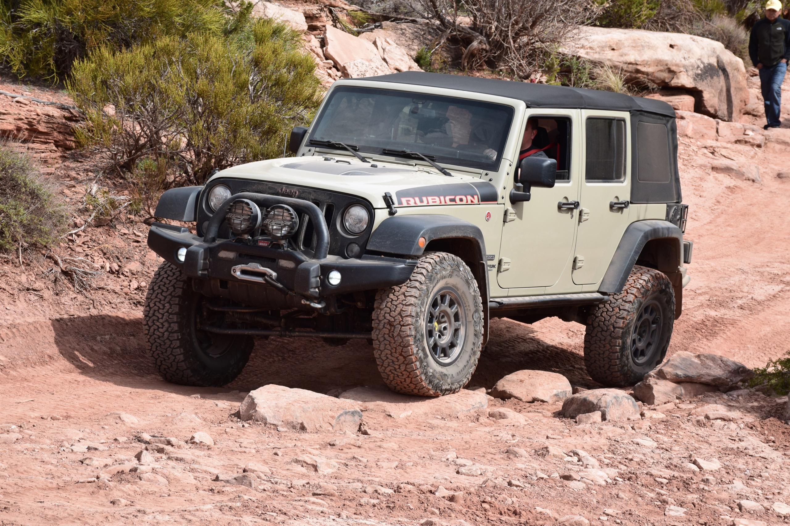
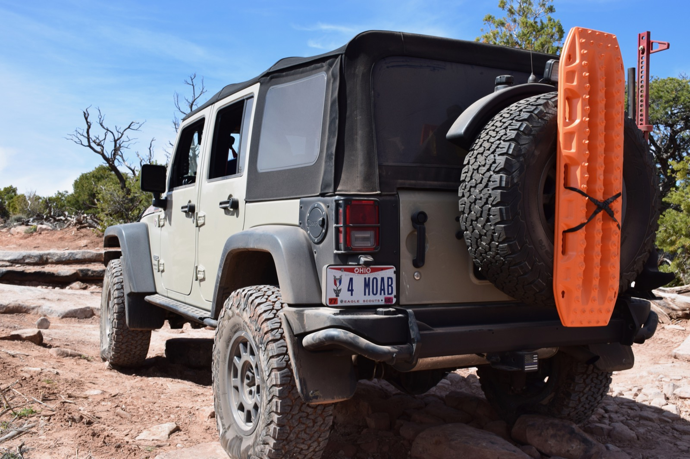
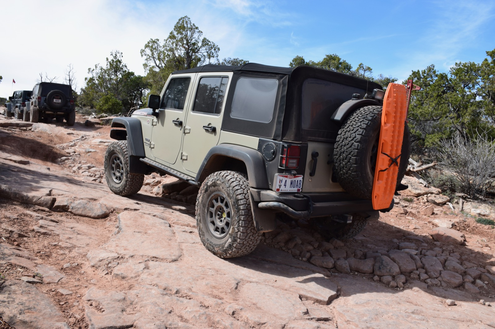
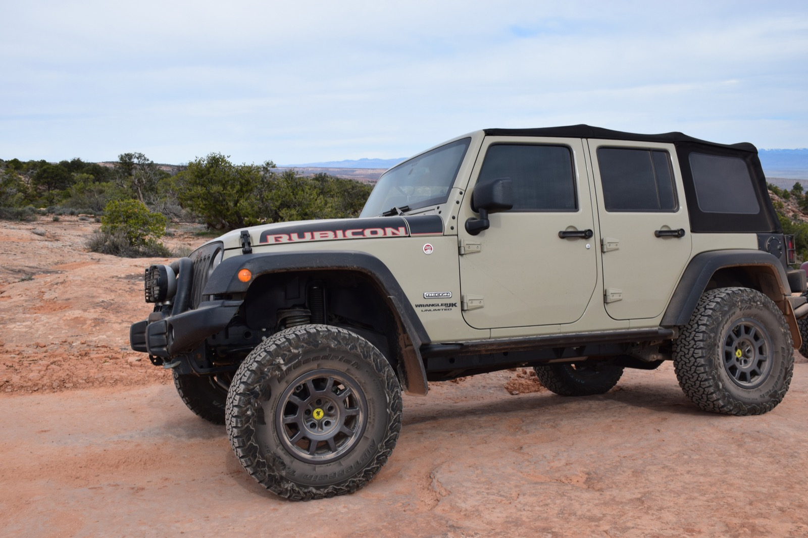
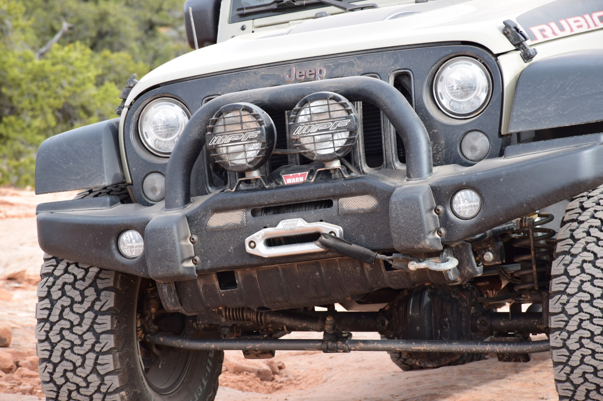

Factory Capability
- Dana 44 front and rear axles
- 4.10 factory gearing
- Tru-Lok electronic differentials
- Electronic sway-bar disconnect
New on YouTube: watch the latest trail footage (opens in new tab)

One of the final and most desirable JK editions, professionally equipped with the American Expedition Vehicles JK350 package.
The factory Rubicon Recon combines the proven 3.6L Pentastar with premium AEV components for a balanced platform equally at home on cross-country journeys and technical rock trails. Dual tops, a premium soft top, painted hardtop with MOPAR headliner and painted black interior panels complete the factory package.
Highway balanced.
Trail proven.
The JK350 package adds integrated suspension, armor, carrying capacity and trail protection without sacrificing the Wrangler's everyday drivability.

Storage, communications and recovery systems keep the cabin organized and the Jeep prepared for days beyond pavement.
Forward, rear and underbody lighting support technical travel after sunset. The air system is pre-plumbed and mounted for a future ARB dual compressor.
Dual IPF 6-inch driving lights mounted to the AEV front bumper.
IPF auxiliary rear lamp and a complete LUX rock-lighting system.
Innovative JK Products mounting bracket and plumbing installed; ARB dual compressor not included.

From Appalachian forest roads to Moab slickrock and Colorado mining passes, the build has been tested across thousands of real expedition miles.
Technical red rock is exactly where this build earns its name.



Every documented upgrade, grouped by system. Branded parts link to the official manufacturer or closest current product collection.